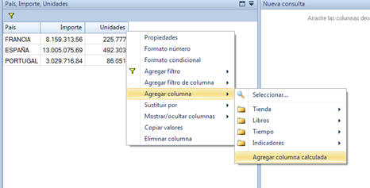
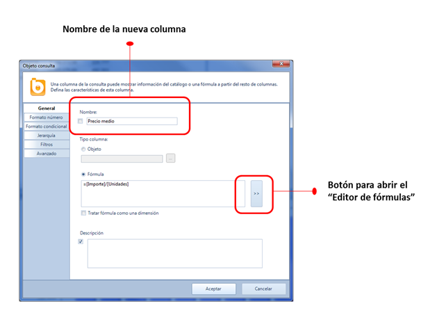
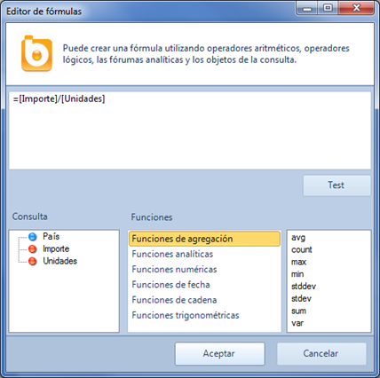

Tal como se ha explicado previamente se pueden añadir columnas arrastrándolas desde el catálogo. Sin embargo, de esa manera solo se pueden incluir las dimensiones e indicadores definidos en el catálogo.
Con Bingo Intelligence el usuario de negocio puede crear también columnas calculadas. Gracias a esta funcionalidad, pueden añadirse datos que no están definidos en el catálogo. Podrás, por ejemplo, calcular el precio medio, o concatenar varias dimensiones, entre otras muchas cosas.
Para ello, debes seleccionar la opción de “Agregar columna calculada” del menú contextual:

Entonces, aparecerá el cuadro de propiedades de la nueva columna, desde donde se puede fijar el nombre de la columna, el formato, y la propia fórmula:

La fórmula se puede escribir directamente, aunque es preferible abrir el “Editor de fórmulas” para ver los objetos de la consulta y las funciones que se pueden utilizar.
El editor de fórmulas muestra todas las columnas de la consulta y todas las fórmulas disponibles.

Bingo Intelligence incorpora muchas funciones analíticas y matemáticas.